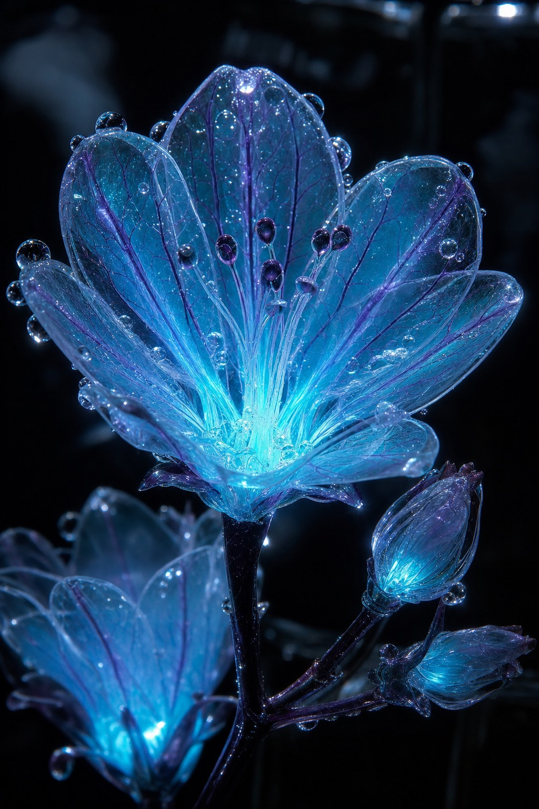

I — WEST TRANSEPT
Lucerna vitrea
The Glasslight
Found flowering at three in the morning, humming faintly at the pitch of a struck wine glass. The petals are cold to look at and colder to regret. Visitors report the bloom turning — very slowly, over the course of an hour — to face whoever has watched it longest.
| Luminance | Bloom hours | Temperament |
|---|---|---|
| 42 lm | 01:00 – 04:40 | Attentive |